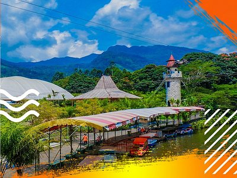
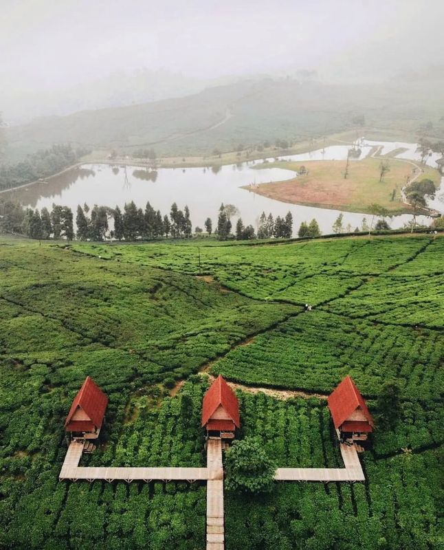
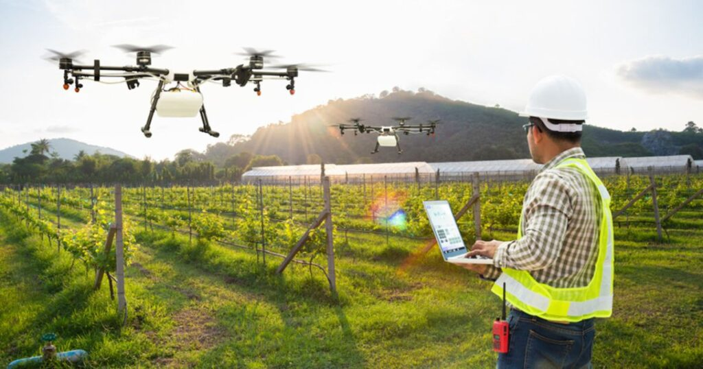

Pariwisata

Cek Selengkapnya
Taman Wisata Matahari
Taman Wisata Matahari adalah destinasi wisata yang terletak di kawasan perbukitan Cisarua dengan luas sekitar 40 hektar. Tempat ini dilengkapi dengan danau-danau buatan yang menambah daya tarik tersendiri. Dengan tiket masuk yang terjangkau, pengunjung sudah bisa menikmati berbagai fasilitas lengkap yang ditawarkan oleh Taman Wisata Matahari, termasuk lima wahana gratis, diskon 10% di Sunda Express Resto, serta fasilitas umum lainnya seperti mushola, toilet, klinik, dan banyak lagi.
Taman Wisata Matahari
Taman Wisata Matahari adalah destinasi wisata yang terletak di kawasan perbukitan Cisarua dengan luas sekitar 40 hektar. Tempat ini dilengkapi dengan danau-danau buatan yang menambah daya tarik tersendiri. Dengan tiket masuk yang terjangkau, pengunjung sudah bisa menikmati berbagai fasilitas lengkap yang ditawarkan oleh Taman Wisata Matahari, termasuk lima wahana gratis, diskon 10% di Sunda Express Resto, serta fasilitas umum lainnya seperti mushola, toilet, klinik, dan banyak lagi.

Cek Selengkapnya
Taman Wisata Matahari
Taman Wisata Matahari adalah destinasi wisata yang terletak di kawasan perbukitan Cisarua dengan luas sekitar 40 hektar. Tempat ini dilengkapi dengan danau-danau buatan yang menambah daya tarik tersendiri. Dengan tiket masuk yang terjangkau, pengunjung sudah bisa menikmati berbagai fasilitas lengkap yang ditawarkan oleh Taman Wisata Matahari, termasuk lima wahana gratis, diskon 10% di Sunda Express Resto, serta fasilitas umum lainnya seperti mushola, toilet, klinik, dan banyak lagi.
Produk

Sayuran Segar
Cek Produk
Buah-buahan

Tanaman Herbal dan Obat

Produk Olahan

Produk Pertanian

Produk Khas Lokal
Edukasi
Desa Leuwimalang memiliki berbagai program edukasi yang bertujuan untuk meningkatkan kualitas pendidikan dan kesadaran warga desa. Program-program ini meliputi pelatihan keterampilan, pendidikan literasi, serta pembinaan pemuda.

Pelatihan Pertanian Modern
Program ini memberikan edukasi kepada petani lokal mengenai teknologi pertanian modern, penggunaan alat, dan metode untuk meningkatkan produktivitas lahan.
Cek SelengkapnyaPendidikan Literasi Digital
Membekali warga desa dengan kemampuan literasi digital agar mereka mampu memanfaatkan teknologi internet untuk usaha dan pendidikan.
Cek SelengkapnyaKewirausahaan Digital
Pelatihan soal cara memulai dan mengelola usaha agrowisata, dari jual produk hasil pertanian sampai kuliner khas desa via e-commerce.
Cek Selengkapnya
Tentang
Selamat datang di halaman informasi mengenai Desa Leuwimalang! Desa ini terletak di wilayah yang sejuk dengan pemandangan alam yang memikat, dikelilingi oleh perbukitan yang hijau dan udara segar khas daerah pegunungan.
Desa Leuwimalang merupakan tempat yang tenang dan nyaman, jauh dari kebisingan kota, sehingga sangat cocok sebagai tempat istirahat dan relaksasi. Dengan keindahan alam yang terjaga, desa ini menjadi salah satu destinasi yang menarik bagi wisatawan yang mencari ketenangan.
Selain keindahan alamnya, desa ini juga dikenal dengan kehidupan masyarakatnya yang agraris. Di Leuwimalang, Anda akan menemukan lahan-lahan pertanian yang hijau, aktivitas bercocok tanam, serta kehidupan desa yang sederhana namun penuh makna. Penduduk setempat juga aktif dalam kegiatan kerajinan lokal yang menghasilkan produk tradisional khas daerah.
Bagi para pengunjung yang tertarik untuk menikmati keindahan pedesaan yang otentik, Leuwimalang menawarkan berbagai homestay yang dikelola oleh warga setempat. Pengunjung dapat merasakan keramahan dan kehidupan desa secara langsung, serta menikmati suasana alam yang menenangkan.
Desa ini juga memiliki akses yang mudah bagi wisatawan yang ingin menjelajahi daerah sekitarnya, dengan berbagai fasilitas yang dapat dinikmati pengunjung selama berada di Leuwimalang.
Kami menyambut Anda untuk menjelajahi Desa Leuwimalang, menikmati pesona alamnya, dan merasakan kehangatan dari komunitas lokal kami. Jika ada pertanyaan atau informasi lebih lanjut, silakan hubungi kami melalui kontak yang tersedia di halaman ini.
| Kode Desa | : | 3201252007 |
| Tahun Pembentukan | : | 1950 |
| Dasar Hukum | : | Perda |
| Tipologi | : | Desa Wisata |
| Klasifikasi | : | Perdesaan |
| Kategori | : | Pedesaan |
| Luas Wilayah | : | 375.12 Ha |
| Batas Sebelah Utara | : | Cilemer, Jogjogan |
| Batas Sebelah Selatan | : | Cisarua, Citeko |
| Batas Sebelah Timur | : | Jogjogan |
| Batas Sebelah Barat | : | Kopo |